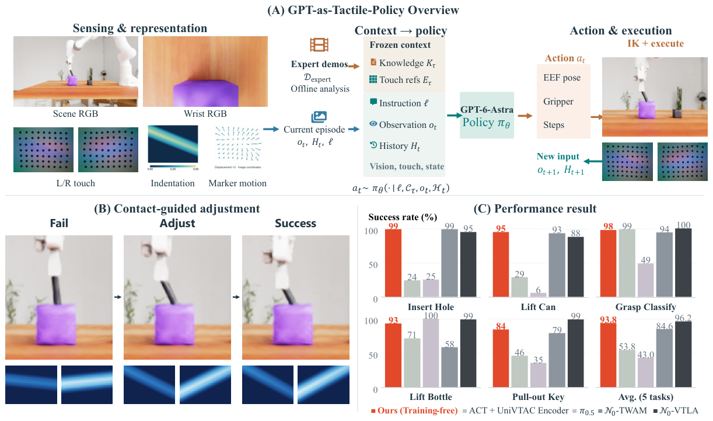

2026 · Preprint
GPT-6-Astra Understands Touch and Outperform Vision--Tactile--Language--Action Models
arXiv:2610.28457

Overview
Investigates whether a general-purpose multimodal model can interpret tactile feedback and use it to guide contact-rich manipulation, combining expert demonstrations, tactile references, multimodal observations, and interaction history.